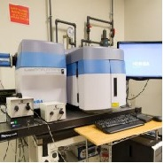

Micro-Raman Spectroscopy

The Horiba Raman spectrometer is coupled to objective lenses from 10x to 100x, which provides high spatial selectivity with minimal sample preparation. The unit is equipped with four probing wavelengths at 325 nm, 532 nm, 633 nm, and 785 nm. The UV source is especially useful to study wide band gap materials such as boron nitride and nanocrystalline diamond.
More details at PRISM Imaging and Analysis Center.